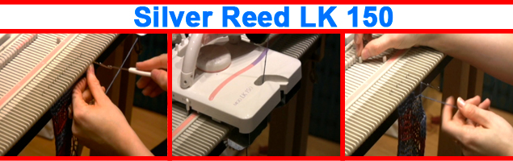
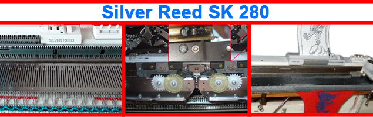
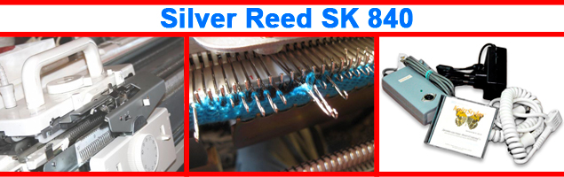

|
Приветствую интересующихся! Поговорить сейчас, предлагаю, о вязании. Вяза́ние— процесс изготовления изделий (часто элементов одежды) из непрерывных нитей, путём изгибания их в петли и соединения этих петель друг с другом с помощью несложных инструментов вручную (вязальный крючок, спицы, игла) или на специальной машине (механическое вязание). Именно, с вязальными машинами мы познакомимся в этой статье, и рассмотрим несколько вопросов, связанных с эксплуатацией и техническими характеристиками. В былое время, вязальные машины выпускали многие известные фирмы: Veritas, Brother, Singer, Pfaff(Passap). Сейчас ситуация изменилась, и из Японских марок, в нашу страну, поставляются только Silver reed, и несколько неизвестных китайских брендов. Все остальные, канули в небытие. Возможно, это связано с прошедшей популярностью на вязальное оборудование. |
|
Q: Что такое вязальная машина? A: Это механическое устройство, позволяющее изготовить в домашних условиях, быстро и качественно, вязаное полотно. Q: Какие нитки можно использовать для вязания?
A: Диапазон нитей весьма широк, от очень тонких, до толстых нитей. И даже если машина не возьмет очень толстую нить, то ее можно использовать в виде декоративной техники, «вивинг» (Weaving)*. Поэтому в вязальных машинах, с поправкой на класс, можно использовать практически любую пряжу, даже для ручного вязания. Исключение составляет мохер, из-за своего состава, эта пряжа забивается в иглы и портит их. Q: Как классифицируются вязальные машины?
A: однофонтурные и двухфонтурные; Q: Чем отличаются одно - и двухфонтурные машины?
A:
Однофантурные машины обладают только одной основной игольницей, что позволяет выполнять все главные виды вязки. Полотно можно сделать, как тонким, так и толстым, что будет зависеть от толщины ниток и плотности вязки. Недостатком таких машин, является односторонняя вязка, которая имеет лицевую и изнаночную стороны, что приведет при цветном вязании к образованию свободных протяжек на внутренней стороне полотна. Да, и еще, эти однофонтурные машины не позволяют вязать по кругу. Q: В чем отличие механической и электронной машин? A: Механические машины бывают двух типов, с ручной и перфокарточной настройкой узора полотна. Вязальная техника с ручной настройкой уже не производится, а яркими примерами были отечественные машины «Нева», «Каскад», «Гайдна» и т.п.. Настройка узора занимала огромное количество времени, и производилась специальными приборами. Современные машины обладают перфокарточным устройством, что позволяет быстро и качественно настроить узор или вид вязки. Перфокарта-это лист со специально набитыми отверстиями. Благодаря этим отверстиям, перфокарточное устройство считывает и выдвигает нужные для узора иглы. При определенных навыках, Вы можете покупать чистые перфокарты и составлять свои оригинальные узоры на полотне или изделиях. Электронные машины, имеют специальную программу, которая дает возможность выполнять узоры без ограничения количества петель, и выполнять деталь, имея контур. Такая вязальная техника умеет рассчитывать количество петель и составлять узор на компьютере, при помощи специальных программ. |
|
Теперь рассмотрим характеристики основных моделей современных вязальных машин Silver reed |
|  |
|
О машине Silver reed lk 150 стоит лишь сказать, что она самая простая в линейке. Однофонтурная легкая машина, хороша для выполнения самых простейших вязальных операций. |
|  |
|
Silver reed SK 280 / SRP60N - двухфонтурная перфокарточная машина, с возможностью вязания как на двух, так и на одной фонтуре. Благодаря этому имеется возможность вязать разными типами переплетений: чулочное вязание, однофонтурный жаккард, вязание одиночных мотивов, узор из нескольких мотивов, ложный ажур, прессовый узор с мережковыми пропусками, слиповое вязание (однотонное и цветное), ажур без деккеровки, вивинг (ткацкий узор), платтинговое вязание, ложная резинка. |
|  |
|
Silver reed SK 840 / SRP60N - двухфонтурная электронная. Это флагман линейки Silver reed. Естественно, эта машина может выполнять все типы вязки, как перфокарточная, и имеет только присущие ей дополнительные возможности. Можно пользоваться, как тонкой, так и мягкой толстой пряжей, и набором «через иглу». В это случае, машина 5 класса, будет иметь расстояние между иглами 9мм, как на 3 классе, единственным вашим ограничением останется только ушко иглы. Пряжа может быть плотностью 300-500м на 100 гр. Отличительной особенностью 840-ой является то, что с помощью особого устройства каретки, машина может выполнять один и тот же рисунок, различными типами вязания. Более простые типы вязания, можно выполнять не подключаясь к компьютеру (на резинках, кулирную гладь и интарсионное вязание). Что-то, более сложное, например, наложение рисунка на фонтуру, либо разработка сложных моделей происходит за счет использования KnittStyler. KnittStyler - это умная часть Silver reed SK 840 / SRP60N. Программное обеспечение, позволяющее связать машину и компьютер. KnittStyler, адаптированная под русскоязычного пользователя программа, изначально создававшаяся отечественными разработчиками. Используя программное обеспечение, вы получите: каталог узоров, конструктор готовых изделий, редактор узоров, редактор выкроек, легкое управление машиной и многое другое. Так же существует много полезных дополнительных аксессуаров: сменник цвета, лекальное устройство, моталка, ажурная, джаккардовая, интарсионная каретки… Все это облегчит процесс вязания и обрадует конечным итогом. Желаем легкости в выборе и удовольствия от общения с вашей помощницей! |